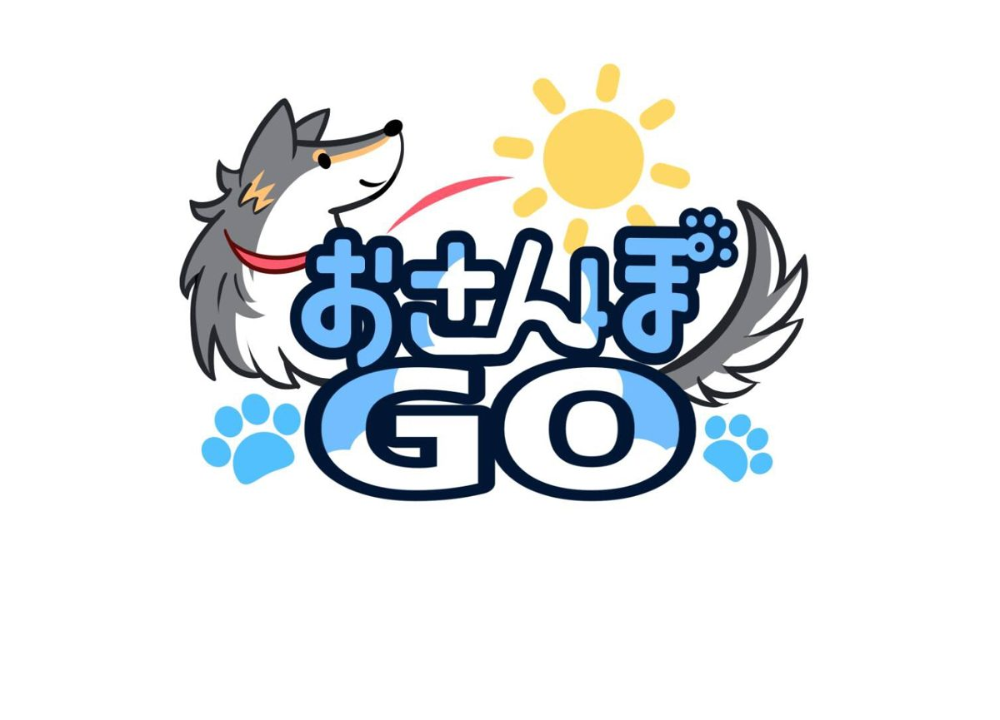
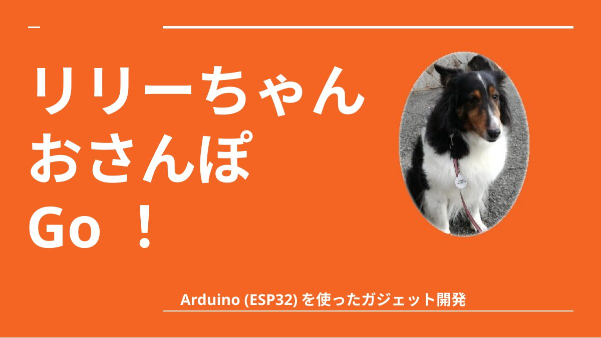
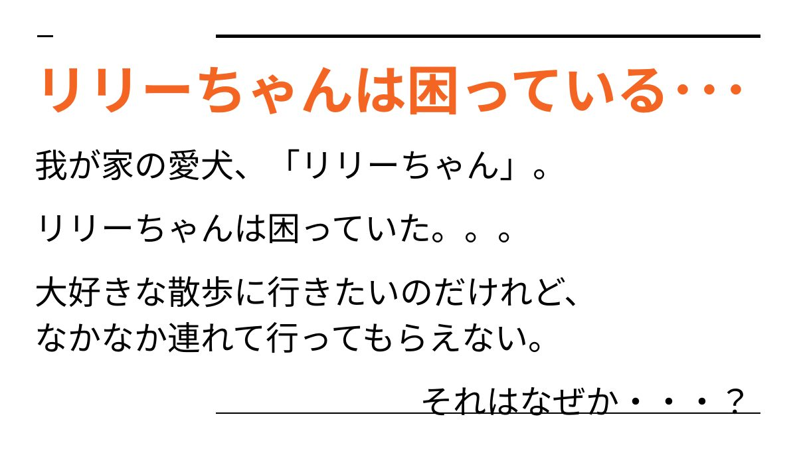
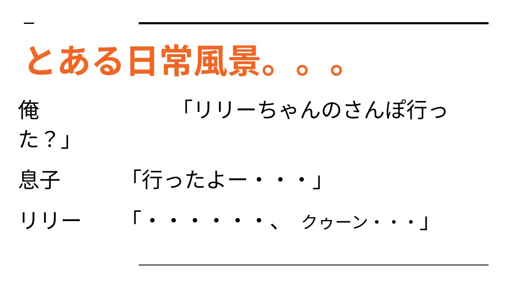
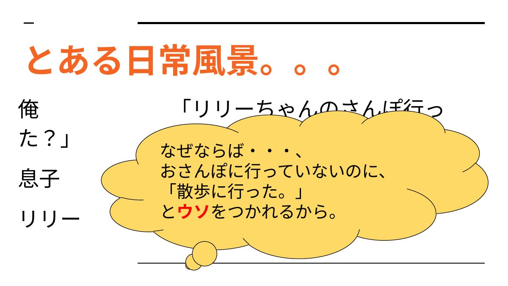
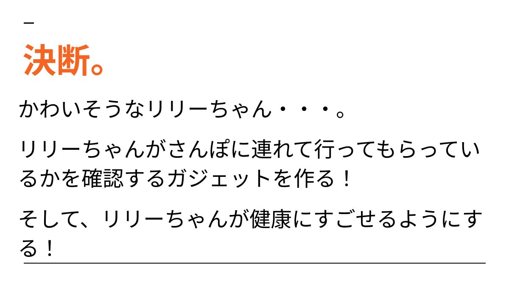
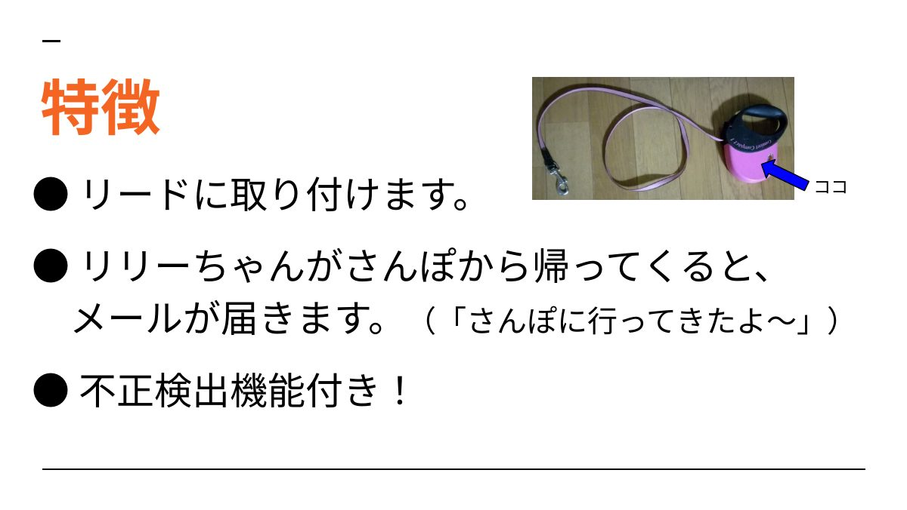
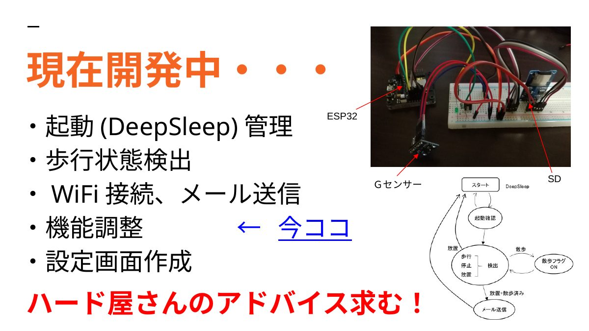
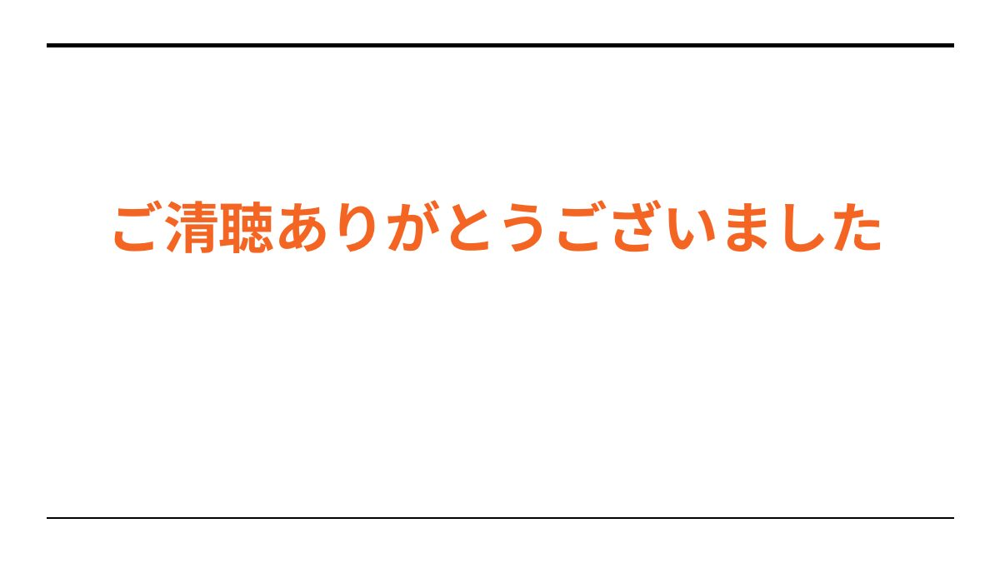
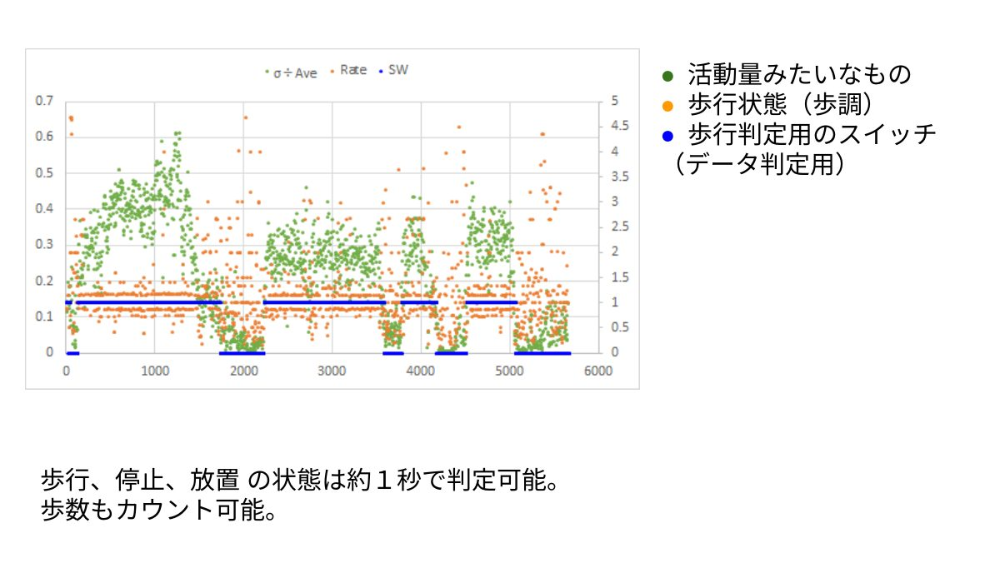

おさんぽGo！
一番最初に作ったガジェットです。犬のリードに付けて、散歩に行くとメールやLINEで知らせてくれます。
作った理由
愛犬リリーの散歩に、息子が「行った」とウソをついているらしい。でも、行ったかどうかを確認する手段がありません。そこで、散歩を検知して通知してくれる装置を作ることにしました。ついでに、不正検出機能も付けました。

仕組み
リードを入れるバッグなどに取り付けます。ESP32とGセンサーで歩行を検出し、WiFi経由で「さんぽに行ってきたよ」と通知します。あわせて散歩の情報を記録し、1週間のまとめも送ってくれます。
| マイコン | ESP32（Arduino） |
|---|---|
| センサー | Gセンサー（歩行検知） |
| 通知 | メール / LINE通知、週次レポート |
| その他 | 不正検出機能付き |
発表
メイカーズカフェで発表して、ハード屋さんのアドバイスを募集しました。2018年には展示会にも出展しています。
そのときに使った企画書です。ライトニングトークで話して、ハード屋さんに手伝ってもらいました。









その後
この装置を使うと、リリーちゃんが散歩に行ったか行っていないかがわかるようになった。
散歩に行くと、僕にLINE通知が届くから。
しかし、昼が過ぎても一向にLINE通知が来ない。
息子に電話してみると
「リリーちゃんの散歩は？」
「・・・寝てた。。。」
「リリーちゃんの散歩に行ってや？」
「はい。。。」
・・・でも、15時を過ぎてもLINE通知がない。
また電話すると、
「リリーちゃんの散歩行ってないやろ！」
「・・・行った。」
「うそつけ、LINE通知来てないぞ」
「・・・ごめん。。。 今から行くわ。。。」
「いや、真夏の15時に散歩に行ったらリリーちゃんやけどする。 夕方にしてくれ」
「うん、わかった。。。」
というような感じで、
やっぱり散歩には連れて行ってもらえないリリーちゃん。。。
この装置を使って、変わったことは、 息子が嘘をつかなくなったこと。
素直にごめんと謝るようにはなったけど、
相変わらずリリーちゃんの朝の散歩はいけていない。。。
しかし、その後この装置は必要なくなった。
なぜかというと、
家族会議で、息子にどうしてもリリーちゃんの散歩に行ってもらえないと、家事が回らないという話になり、
嫁さんが、「たのむからリリーちゃんの散歩に行って。 行ってもらわないとどうにも家事が回らない。100円あげるから。」と言うと、
息子が喜んでリリーちゃんの散歩に行くようになった！
その後は100円あげなくても リリーちゃんの散歩に行ってくれるようになった。
（当時、息子はバイトしていなかったので、100円でも欲しかったらしい。）
と、いうわけで、リリーちゃんは無事 散歩に連れて行ってもらえるようになったのである。。。